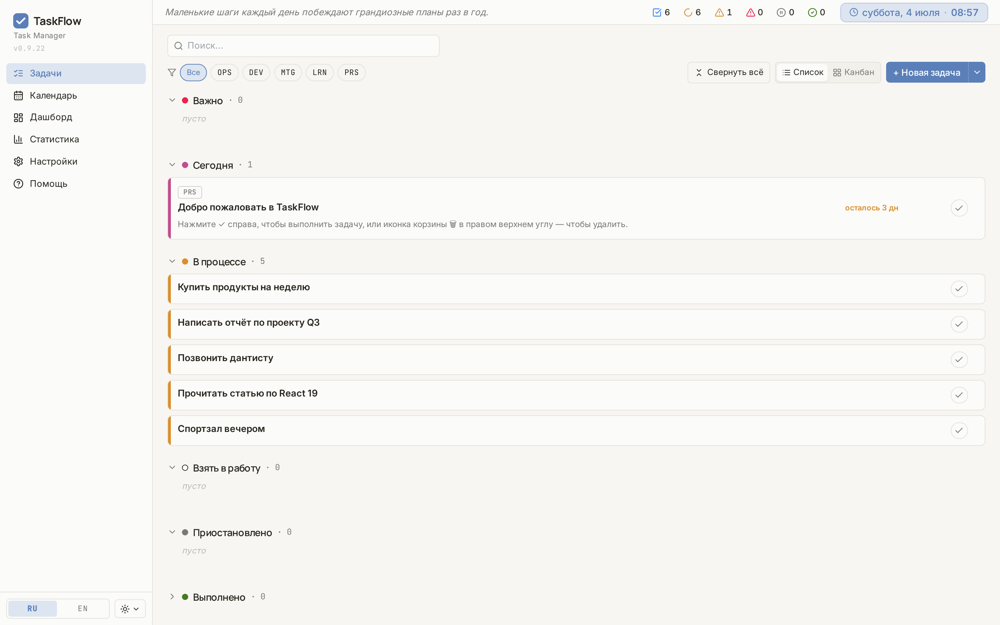

Настольное приложение, которое подстраивается под ваш рабочий процесс. Канбан, календарь, дашборд, гибкие статусы — всё, что нужно, чтобы держать дела под контролем.

TaskFlow не пытается заменить Notion или Jira. Он собирает главное — простой и понятный интерфейс, которым удобно пользоваться каждый день.
Переключайтесь между списком и канбан-доской. Drag & drop между колонками. Пять статусов по умолчанию — «Важно», «Сегодня», «В процессе», «Взять в работу», «Выполнено» — и возможность настроить свои под ваши процессы.
Просроченные и сегодняшние задачи подсвечиваются автоматически. Смотрите загрузку по месяцам, назначайте дедлайны, группируйте по категориям — всё сразу видно, ничего не теряется.
Сколько задач сделали за неделю, где буксуете, какая категория съедает больше времени. Данные — чтобы принимать решения, а не для красоты.
Полная локализация интерфейса. Переключение языка прямо в приложении — без перезапуска. Одинаково удобно на русском и английском, без потерь в терминах.
Свои цветовые категории для проектов, приоритетов и контекстов. Быстрые фильтры в один клик — покажет только то, что важно прямо сейчас.
Ваши данные — ваши. Экспортируйте всё в JSON одним кликом, импортируйте на другом устройстве. Никакого lock-in.
Скачали, зарегистрировались, начали работать. Никаких сложных настроек — всё готово из коробки.
Portable-версия или NSIS-инсталлятор для Windows — без прав администратора. MSI-инсталлятор — если нужен стандартный вариант установки.
Регистрация по email или через Google — займёт минуту. Аккаунт нужен для безопасности данных и будущих возможностей.
Добавьте задачи, категории, приоритеты. При желании — свои статусы. Через пять минут интерфейс будет уже как родной.
Открытый стек. Автообновления. Тесты на каждый релиз.
Скачивайте и используйте TaskFlow, чтобы работать спокойно, комфортно и с ясной головой — задачи под рукой, приоритеты на месте, ничего не забыто.
Скачать TaskFlow v0.9.28